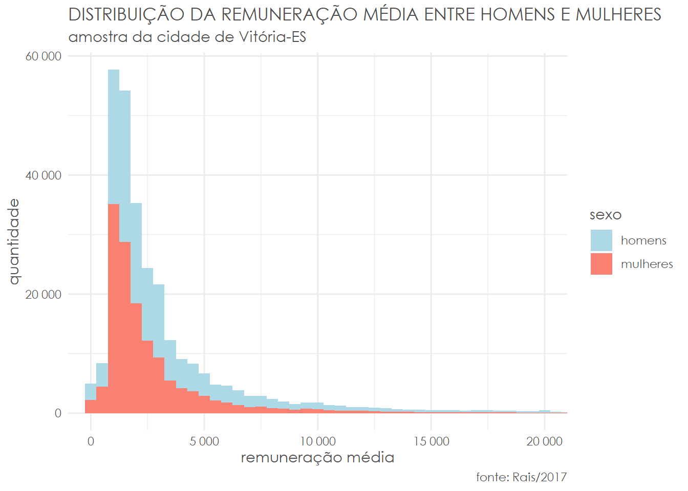

DIFERENÇAS NO AGREGADO
Primeiramente, vamos tentar entender o que temos em mãos em termos de amostra:
# quantidade de homens e mulheres
data %>%
ggplot(aes(x = factor(sexo),
fill = factor(sexo),
label = scales::number(..count..))) +
geom_bar() +
geom_label(stat = "count",
show.legend = FALSE,
color = "grey30") +
scale_y_continuous(labels = scales::number) +
scale_fill_manual(name = "sexo",
labels = c("homens", "mulheres"),
values = c("lightblue", "salmon")) +
labs(x = "",
y = "quantidade",
title = "QUANTIDADE DE HOMENS E MULHERES",
subtitle = "amostra da cidade de Vitória-ES",
caption = "fonte: Rais/2017") +
theme_minimal() +
theme(text = element_text(family = "Century Gothic",
color = "grey30"),
axis.text.x = element_blank())
Temos praticamente a mesma quantidade de homens e mulheres em nossa amostra. Podemos, antes de realizar qualquer outra análise e aplicar quaisquer filtros, calcular a remuneração média:
# remuneração média
aggregate(data = data, rem_media ~ sexo, FUN = mean)## sexo rem_media
## 1 1 3925.187
## 2 2 2846.727No agregado, a renda média dos homens em Vitória é quase 40% maior que as das mulheres. Antes de avançarmos, é prudente verificar em qual medida essas médias são afetadas por outliers:
# quartis
boxplot_data = data %>%
group_by(sexo) %>%
summarise(stats = list(fivenum(rem_media))) %>%
unnest(cols = c(stats))
# boxplot
data %>%
ggplot(aes(
x = factor(sexo),
y = rem_media,
fill = factor(sexo)
)) +
geom_boxplot() +
geom_label(
data = boxplot_data,
aes(x = factor(sexo), y = stats, label = scales::number(stats)),
nudge_x = 0.25,
show.legend = FALSE
) +
coord_cartesian(ylim = c(0, 5000)) +
scale_y_continuous(labels = scales::number) +
scale_fill_manual(
name = "sexo",
labels = c("homens", "mulheres"),
values = c("lightblue", "salmon")
) +
labs(
x = "",
y = "remuneração média",
title = "DISTRIBUIÇÃO DA REMUNERAÇÃO MÉDIA ENTRE HOMENS E MULHERES",
subtitle = "amostra da cidade de Vitória-ES",
caption = "fonte: Rais/2017"
) +
theme_minimal() +
theme(
text = element_text(
family = "Century Gothic",
color = "grey30"
),
axis.text.x = element_blank()
)Como podemos ver, a mediana da remuneração média dos homens é quase a metade de sua média, indicando que sua distribuição é bastante distorcida. Podemos confirmar o diagnóstico com o auxílio de um qqplot:
# qqplot homens
qqnorm(data[data$sexo == 1, ]$rem_media)
qqline(data[data$sexo == 1, ]$rem_media)
# qqplot mulheres
qqnorm(data[data$sexo == 2, ]$rem_media)
qqline(data[data$sexo == 2, ]$rem_media)
data %>%
mutate(gg = substr(cod_profissao, 1, 3)) %>%
group_by(gg) %>%
summarise(renda = mean(rem_media)) %>%
arrange(desc(renda))## # A tibble: 185 x 2
## gg renda
## <chr> <dbl>
## 1 122 30119.
## 2 242 22401.
## 3 213 21414.
## 4 254 19331.
## 5 811 16088.
## 6 201 15142.
## 7 750 14736.
## 8 102 14511.
## 9 121 14046.
## 10 214 13220.
## # ... with 175 more rows